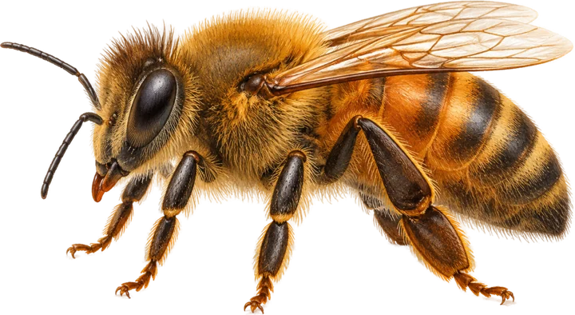
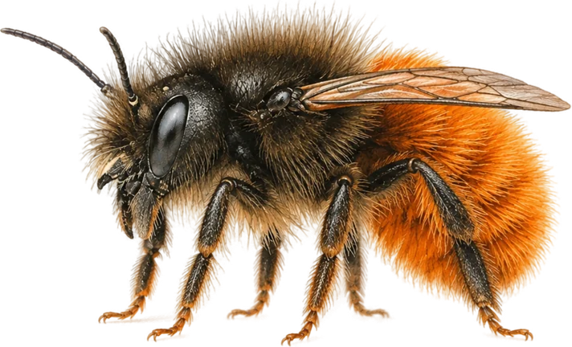
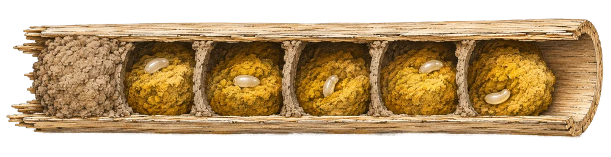
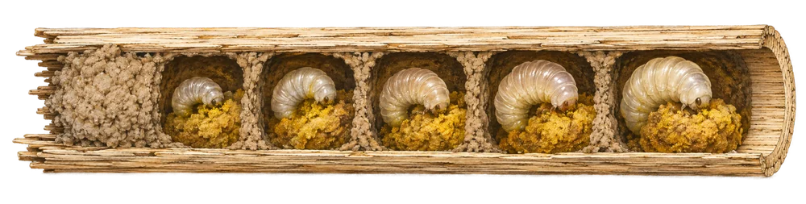
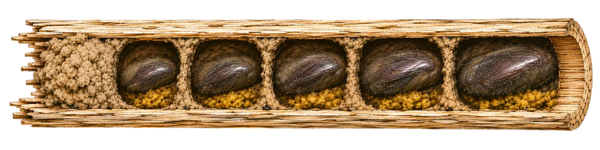

Fogadj be vadméheket kertedbe vagy erkélyedre.Adoptă albine solitare în grădina sau pe balconul tău.Host wild bees in your garden or on your balcony.
Gyakran halljuk, hogy a méhek veszélyben vannak, számuk csökken, és a növények beporzása sem valósul meg hatékonyan. Kevesebben ismerik a magányosan élő vadméhek sokszínű, fajgazdag közösségét, amely fokozott figyelmet igényel.Auzim des că albinele sunt amenințate, că numărul lor scade și că plantele nu mai sunt polenizate eficient. Puțini cunosc însă comunitatea bogată a albinelor solitare, zise și sălbatice, care are nevoie de mai multă atenție.We often hear that bees are in danger, their numbers are falling and plants are no longer pollinated efficiently. Fewer people know the diverse, species-rich community of solitary wild bees, which needs more attention.
A kolozsvári vadméhek kutatási projektje a Babeș-Bolyai Tudományegyetem Biológia és Geológia Karán indult. Célunk a városban élő vadméhfajok megismerése, mert ilyen felmérés még nem készült. A fajlista mellett azt is vizsgáljuk, mennyire telepednek meg a tömbházak erkélyein és a kertes házak udvarain.Proiectul de inventariere a albinelor solitare din Cluj a pornit la Facultatea de Biologie și Geologie a Universității Babeș-Bolyai. Vrem să cunoaștem speciile de albine solitare din oraș, pentru că un astfel de studiu nu există încă. Pe lângă lista de specii, urmărim cât de ușor colonizează balcoanele blocurilor și grădinile urbane.The Cluj wild bee research project started at the Faculty of Biology and Geology of Babeș-Bolyai University. Our aim is to learn which wild bee species live in the city, because no such survey has been made yet. Besides the species list, we study how readily they settle on apartment-block balconies and in house gardens.
Szociális vagy magányos?Sociale sau solitare?Social or solitary?
Nincs királynő, nincs méz. Csak egy anya és a fészke.Fără regină, fără miere. Doar o mamă și cuibul ei.No queen, no honey. Just a mother and her nest.

- családokban (kolóniákban) él
- trăiește în familii (colonii)
- lives in families (colonies)
- királynő, dolgozók és herék
- regină, lucrătoare și trântori
- queen, workers and drones
- mézet és viaszt készít
- produce miere și ceară
- makes honey and wax

- minden nőstény maga épít fészket
- fiecare femelă își construiește singură cuibul
- every female builds her own nest
- nincsenek kasztok
- nu există caste
- no castes
- a nektárt pollennel keverve méhkenyeret készít az utódoknak
- amestecă nectarul cu polen și face „pâine de albine” pentru urmași
- mixes nectar with pollen to make bee bread for her young
Miért fontosak?De ce sunt importante?Why do they matter?
A beporzók nélkülözhetetlenek az ökoszisztéma működésében és az emberi élelmezésben: körte, szilva, repce, uborka, napraforgó, káposzta, paradicsom, kávé.Polenizatorii sunt esențiali pentru ecosistem și pentru hrana noastră: pere, prune, rapiță, castraveți, floarea-soarelui, varză, roșii, cafea.Pollinators are essential for ecosystems and for our food: pears, plums, oilseed rape, cucumbers, sunflowers, cabbage, tomatoes, coffee.
Fontosak, de fogyatkoznak.Importante, dar în declin.Important, but declining.
- nem fenntartható területhasználatutilizarea nesustenabilă a terenurilorunsustainable land use
- intenzív mezőgazdaságagricultura intensivăintensive agriculture
- rovarirtó szerekinsecticideleinsecticides
- invazív fajokspeciile invaziveinvasive species
- szennyezéspoluareapollution
- klímaváltozásschimbările climaticeclimate change
RovarhotelHotelul pentru insecteInsect hotel
Egy köteg nád, egy fúrt fahasáb, és máris van szállás.Un mănunchi de stuf, un butuc găurit, și cazarea e gata.A bundle of reeds, a drilled log, and the rooms are ready.
A rovarhotel búvó-, fészkelő- és telelőhelyet ad a rovaroknak. Egyszerű szerkezet, otthon is elkészíthető a gyerekekkel, és közben a természetet is megfigyelhetik. Mellé ültess változatos, őshonos, méhek által kedvelt növényeket.Hotelul oferă insectelor ascunziș, loc de cuibărit și de iernat. Construcția e simplă, se poate face acasă împreună cu copiii, care pot astfel observa natura. Plantează alături specii indigene variate, pe placul albinelor.An insect hotel gives insects shelter and a place to nest and overwinter. It is simple to build at home with children, who can watch nature at the same time. Plant a variety of native, bee-friendly plants next to it.
Hol fészkelnek a magányos méhek?Unde cuibăresc albinele solitare?Where do solitary bees nest?
Mikor tedd ki?Când îl amplasezi?When to put it out?
A szobák belsejeÎn interiorul camerelorInside the rooms
Egy nádszál, egy évnyi fejlődés.Un fir de stuf, un an de dezvoltare.One reed, one year of development.
A ciklus kezdete fajonként eltér: egyesek kora tavasszal, mások nyár végén vagy kora ősszel petéznek. Az utódok fejlődése hasonló, csak az időtartam változik.Începutul ciclului diferă de la o specie la alta: unele depun ouăle primăvara devreme, altele la sfârșitul verii sau toamna. Dezvoltarea urmașilor e asemănătoare, doar durata variază.The start of the cycle differs between species: some lay eggs in early spring, others in late summer or early autumn. The offspring develop in a similar way; only the timing changes.

TavaszPrimăvaraSpringMéhkenyér és petePâine de albine și ouBee bread and egg
A nőstény pollent és nektárt gyűjt a cellákba, majd mindegyik méhkenyérre egy petét rak.Femela adună polen și nectar în celule, apoi depune câte un ou pe fiecare porție de pâine de albine.The female stocks the cells with pollen and nectar, then lays one egg on each loaf of bee bread.

NyárVaraSummerLárvákLarveleLarvae
Kikelnek a lárvák és a méhkenyérből táplálkoznak. Egyes cellákban az utód nem éri el a lárva stádiumot.Larvele eclozează și se hrănesc cu pâinea de albine. În unele celule urmașul nu ajunge la stadiul de larvă.The larvae hatch and feed on the bee bread. In some cells the offspring never reaches the larval stage.

TélIarnaWinterSelyemgubóCoconul de mătaseSilk cocoon
A lárva selyemgubót sző maga köré, abban telel át, és tavasszal vagy nyáron kifejlett méhként távozik.Larva își țese un cocon de mătase, iernează în el și iese primăvara sau vara ca adult.The larva spins a silk cocoon around itself, overwinters in it, and leaves as an adult bee in spring or summer.
VendéglistaLista oaspețilorGuest list
Ki költözik be, és ki jön hívatlanul?Cine se mută, și cine vine nepoftit?Who moves in, and who comes uninvited?
Felmérés · önkénteseket keresünkCercetarea · căutăm voluntariSurvey · volunteers wanted
Legyél a házigazdánk.Fii gazda pentru albine.Be our host.
Több méhfaj alkalmazkodott a városi élethez, mert itt is talál táplálékot és fészkelőhelyet. A rovarhotelt kihelyező önkéntesek saját hoteljeik megfigyelésével segítik Kolozsvár méheinek megismerését.Mai multe specii de albine s-au adaptat vieții urbane, pentru că găsesc aici hrană și loc de cuibărit. Voluntarii care amplasează un hotel ajută, prin observațiile lor, la cunoașterea albinelor din Cluj-Napoca.Several bee species have adapted to city life because they find food and nest sites here too. Volunteers who put out an insect hotel help us learn about the bees of Cluj-Napoca by watching their own hotels.
zoltan.laszlo@ubbcluj.ro
Részletek a kutatásról →Detalii despre cercetare →More about the research →
Mit csinálsz?Ce faci?What do you do?
- 01Kihelyezed a hotelt az erkélyen vagy a kertben.Amplasezi hotelul pe balcon sau în grădină.Put the hotel out on your balcony or in your garden.
- 02Fényképezed a beköltöző vadméheket és más rovarokat.Fotografiezi albinele sălbatice și celelalte insecte care se mută.Photograph the wild bees and other insects that move in.
- 03Követed a tapasztások számát, és ha tudod, meghatározod az egyedeket.Urmărești numărul de intrări astupate și, dacă poți, identifici indivizii.Keep track of the number of sealed tubes and, if you can, identify the insects.
- 04Időnként jelentést küldesz.Trimiți din când în când un raport.Send us a report from time to time.
Amit cserébe adunkCe oferimWhat we offer in return
Időnkénti találkozók, ahol megbeszéljük az addig gyűjtött adatokat, és egy naptár a résztvevők fotóival.Întâlniri ocazionale în care discutăm datele colectate și un calendar cu fotografiile participanților.Occasional meetings to discuss the data collected so far, and a calendar with the participants' photos.
Így olvasd a lezárt csöveketCum citești tuburile astupateHow to read the sealed tubes
A dugó anyaga elárulja, ki építette a fészket. A nyitott cső még szabad.Materialul dopului arată cine a construit cuibul. Un tub deschis este încă liber.The plug material tells you who built the nest. An open tube is still free.


| SzámNr.No. | FajSpeciaSpecies | Fészekzárás típusaTipul de închidere a cuibuluiType of nest closure |
|---|---|---|
| 1 | Hylaeus communis | Celofánszerű, áttetsző hártyaMembrană transparentă, asemănătoare celofanuluiTransparent, cellophane-like membrane |
| 2 | Osmia leaiana | Növényi pépből készült zárásDop din pastă vegetalăPlug of chewed plant pulp |
| 3 | Osmia brevicornis | Növényi pépből készült zárásDop din pastă vegetalăPlug of chewed plant pulp |
| 4 | Megachile rotundata | Levél- vagy sziromdarabokból készült zárásDop din bucăți de frunze sau petalePlug of leaf or petal pieces |
| 5 | Osmia florisomnis | Durvább szemcséjű sárdugóDop de noroi cu granulație mai grosierăCoarse-grained mud plug |
| 6 | Osmia cornuta | Finomabb szerkezetű sárdugóDop de noroi cu structură mai finăFine-textured mud plug |
| 7 | Hoplitis adunca | Gyantás zárás, fényes változatDop de rășină, variantă lucioasăResin plug, glossy form |
| 8 | Hoplitis adunca | Gyantás zárás, matt változatDop de rășină, variantă matăResin plug, matt form |
| 9 | Osmia bicornis | SárdugóDop de noroiMud plug |
Megjegyzés: a rajz szemléltető ábra; a fészekzárások tényleges anyagát és szerkezetét a fajok biológiájával összevetve kell ellenőrizni.Notă: desenul este ilustrativ; materialul și structura reală a dopurilor trebuie verificate în funcție de biologia speciilor.Note: the drawing is illustrative; the actual material and structure of the nest closures should be checked against the biology of each species.